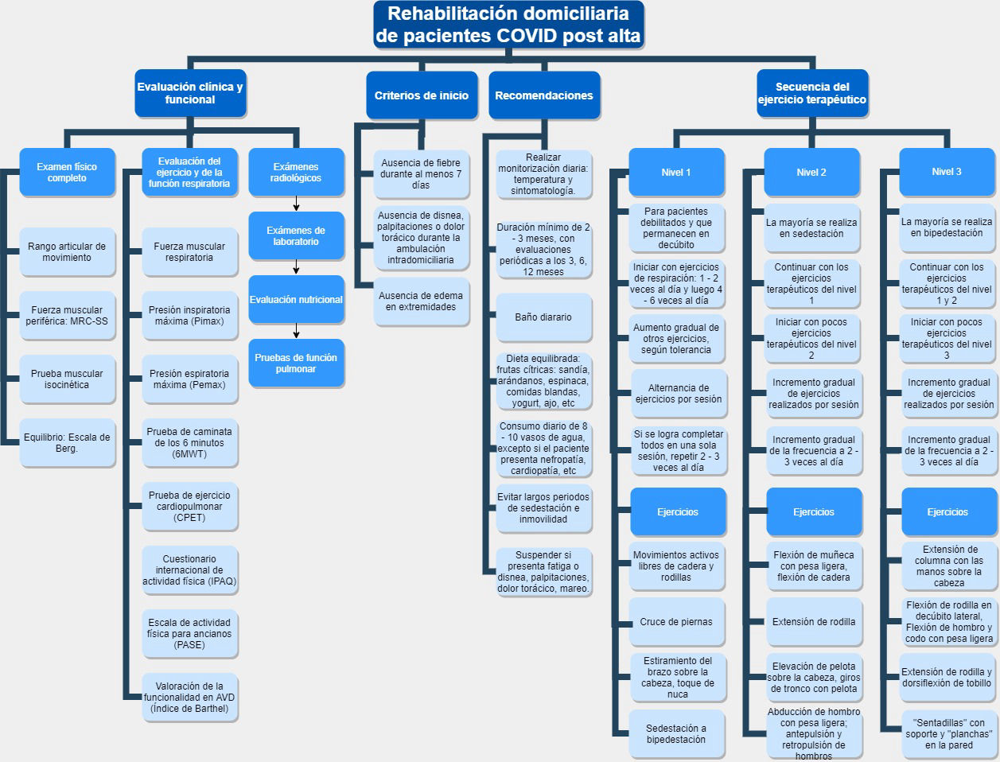

Debido a que aún no se dispone de los datos suficientes para establecer un gasto de rehabilitación para pacientes que han padecido COVID-19, se decidió investigar sobre el gasto de otras rehabilitaciones parecidas. Entre todas estas se escogió la rehabilitación para pacientes que sufrieron EPOC (Enfermedad pulmonar obstructiva crónica) ya que esta enfermedad ocasiona similares secuelas a los pacientes.
En un estudio llamado “Panorama epidemiológico e impacto económico actual” realizado en México, se concluyó que el INER (Instituto Nacional de Enfermedades Respiratorias) tiene un gasto de más de $400,000 por paciente en terapia intensiva, si el caso es de un sujeto que tiene EPOC muy grave. [32]
Al recoger información sobre el gasto en rehabilitaciones parecidas para pacientes que han sufrido COVID-19, se puede concluir que un gasto aproximado en la rehabilitación de COVID-19 es de más de $400,000.
TERAPIA PARA REHABILITACION POR POST-COVID
Previo al alta hospitalaria se debe realizar un informe que refleje las necesidades más inmediatas (seguridad en el domicilio, control sintomatológico, dependencia a oxígeno suplementario, soporte nutricional, apoyo psicosocial) y las necesidades a corto y mediano plazo (mejoría funcional, física y emocional; vuelta al trabajo) del paciente con COVID-19.
Se debe identificar la necesidad de soporte asistencial mediante pruebas sencillas como Short Physical Performance Battery (SPPB), el Sit-to-Stand Test (STS), la dinamometría manual o la MRC-SS.Se debe usar medidas de resultado como el 6MWT, FIM, SF-36M, etc.

Gráfico 14: Elaboración de Grupo. Fuente: Protocolos Y Recomendaciones De Medicina Física Y Rehabilitación Para Pacientes Con COVID-19. HNERM.[33]
La rutina de rehabilitación ya dirigida a dos partes:
FISICA:
Para esta parte se recomienda monitorización diaria, una duración de mínimo 2 - 3 meses de rehabilitacion con evaluaciones periódicas, realizar consultas médicas de control a los 3, 6 y 12 meses, evitar largos períodos de sedestación e inmovilidad.
EMOCIONAL:
Se recomienda la comunicación diaria mediante redes sociales, videollamada o llamada telefónica.
La mayoría de pacientes puede llegar a experimentar sentimientos de abandono, arrepentimiento, soledad, depresión, ansiedad, fobia, ataques de pánico, etc [5]
El modelo idóneo de atención rehabilitadora en el paciente con enfermedad por COVID-19 tiene que ser integral (abordaje de aspectos físicos, psicológicos, cognitivos y sociales), al igual que se realiza en otros procesos de nivel de complejidad moderada o elevada en rehabilitación. [37]
Los pacientes y sus cuidadores deben estar informados sobre las posibles consecuencias para la salud después de la estancia en la UCI, así como sobre la larga duración de las limitaciones en el funcionamiento y la opción de buscar asesoramiento y tratamiento. [36] Por ello, como equipo abordaremos la rehabilitación integral brindando información al paciente post-UCI desde sus diversos componentes(físico, cognitivo y psicológico), pero nos enfocaremos en la rehabilitación física a través del monitoreo y seguimiento de metas y ejercicios para el paciente.
¿Qué significa oportuno?
En pacientes que son ingresados en una unidad de cuidados intensivos por COVID-19, se tiene en común que la mayoría de ellos desarrolle síndrome de dificultad respiratoria aguda (SDRA) que requiere de una ventilación mecánica. [38]
En un estudio llamado “Functional Disability 5 Years after Acute Respiratory Distress Syndrome” se tenía como objetivo obtener datos de seguimiento sobre los supervivientes del síndrome de dificultad respiratoria aguda (SDRA) a 5 años del alta en UCI, en el mismo estudio se concluye que tener SDRA deja secuelas tanto físicas como psicológicas por más de 5 años después del alta en UCI [39]. Con lo cual, podemos concluir que las secuelas que deja estar en UCI por COVID-19 son muy perjudiciales para la salud del paciente ya que estas pueden llegar a persistir hasta 5 años después de la estancia en UCI.
Diferentes estudios tienen en común que, para obtener resultados positivos a corto y a largo plazo es necesaria la implantación de un programa de rehabilitación una vez que el paciente se haya dado de alta tanto de la UCI como del hospital [40] [41] [42].